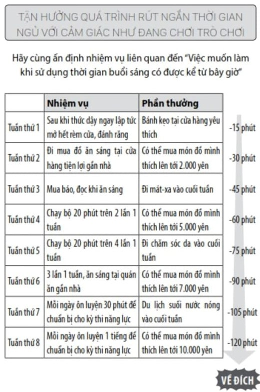

Để có thể tiến hành rút ngắn thời gian ngủ một cách chắc chắn hơn nữa, tôi khuyên bạn nên cắt giảm thời gian ngủ bằng "cảm giác giống như chơi trò chơi".
Đây là phương pháp rất hiệu quả được tạo ra từ phương diện "thú vị" của việc gắn kết động cơ đi kèm mà tôi đã trình bày ở phần trước. Hãy cùng đặt ra nhiệm vụ liên quan đến việc dậy sớm trong tuần thứ nhất, tuần thứ hai, tuần thứ ba...
Ví dụ, bạn có thể làm như sau cũng là một ý kiến không tồi.
Đặt ra nhiệm vụ của từng tuần giống như vậy, sau đó cố gắng thực hiện mỗi ngày. Nếu như nhiệm vụ thực hiện vào thời gian buổi sáng là việc có kết nối trực tiếp với những việc mà bản thân muốn làm trong tương lai, kết quả bạn nhận được sẽ còn tuyệt vời hơn nữa.
Và đương nhiên, vì là trò chơi, vậy nên tôi cũng muốn bạn đừng quên thưởng cho bản thân khi đã hoàn thành nhiệm vụ.
Nếu hoàn thành tuần thứ nhất, "Có thể ăn loại bánh kẹo mình thích". Nếu hoàn thành tuần thứ hai, "Có thể mua một món đồ mình thích mà có giá trị lên tới 2.000 yên"... Tương tự như vậy, bạn hãy chuẩn bị phần thưởng nếu như bản thân hoàn thành nhiệm vụ của tuần đó. Như vậy rất thú vị đúng không?
Khi đó, hãy đánh dấu lên cuốn lịch để bàn hoặc lịch treo tường, để cho bản thân nhìn thấy tình trạng tiến bộ của từng ngày, nhận được sự giúp đỡ từ gia đình và bạn bè, báo cáo, quản lý tình hình tiến bộ của bản thân. Nhờ thế, bạn có thể nâng cao động lực cố gắng của bản thân nhiều hơn nữa.
Bằng cách đó, khi bạn có thể rút ngắn thời gian ngủ trong vui vẻ và phấn khích, sau hai tháng, bạn có thể tự do sử dụng 2 tiếng bản thân có thêm vào buổi sáng.
Nhờ vậy, một ngày của bạn, cũng như cuộc đời của bạn, chắc chắn sẽ có những thay đổi rất lớn.
